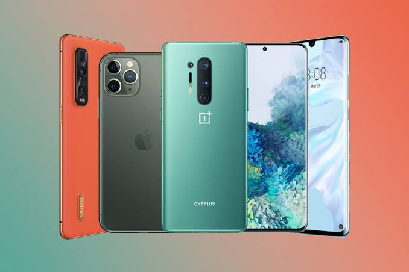

दुनिया कापहला Mobile Phone था “Motorola DynaTAC 800x” और इसे सन 1983 में launch किया गया था. इसकी कीमत उस समय करीब $4,000 की रखी गयी थी. वहीँ इसमें केवल आप 30 minutes तक की बात कर सकते थे. इसकी आकार की बात करें तब ये करीब 1 Foot तक की थी. इसकी इतनी बड़ी size होने के वाबजूद भी उस समय इसे सबसे ज्यादा portable telephone माना गया. उस समय ये सच में एक बहुत ही बड़ी बात थी हम इन्सान बिना किसी तार के यानि की wirelessly बात कर सकते है वो भी एक portable phone के सहायता से.
1983 – 1990 (portable Mobile Phone)
सन 1983 में दुनिया को अपना पहला portable mobile phone प्राप्त हुआ जिसका नाम था Motorola DynaTAC 8000X. इसकी कीमत थी करीब $4000 USD और उस समय इसे एक status symbol के तोर पर माना जाता था.दो वर्षों के बाद पहला mobile phone call किया गया वो भी UK के की धरती है, ये phone call किया गया था Vodafone Chairman Sir Ernest Harrison जी को. सन 1989 में, Motorola ने DynaTAC के बाद दुसरे model भी तैयार किये जो की थे 9800X या MicroTAC, इसमें एक fold-down keyboard cover मेह्जुद था और वहीँ इसने flip phone की एक standard भी set की हुई थी पुरे 90’s में.
1991 – 1994 (Consumer Handsets)
GSM को सबसे पहले launch किया गया था Europe में सन 1991 में. इसे launch किया गया था Orbitel TPU 900 के साथ Market में पहली बार, लेकिन सन 1992 तक mobiles को केवल business लोगों द्वारा ही इस्तमाल किया जाता था, वहीँ इसके बाद से अब इसे Consumers भी इस्तमाल करने लगे.वहीँ इसकी कीमत में भारी गिरावट तब देखी गयी जब इसकी mass production होने लग गयी, और लोगों को cost-effective consumer handsets मिलने लग गए digital displays के साथ. Nokia ने इस बदलाव का सबसे पहला फायेदा उठाया, वहीँ Nokia 1011 को भी उसी वर्ष launch किया गया था.
1999-2002 Feature phone
सन 1999 में Nokia ने launch किया 7110, जो की पहली device थी जिसने की WAP का इस्तमाल किया गया (ये एक ऐसी means थी जिससे की information को access किया जाता है एक mobile wireless network में). वहीँ इसके ठीक एक वर्ष बाद, Sharp ने launch किया दुनिया का सबसे पहला camera phone, J-SH04 ये भले ही उस समय केवल available था Japan में लेकिन इसके आने से ये signal मिला की लोगों को Phone Photography की तरफ झुकाव है. केवल पश्चिमी दुनिया में camera phone की शुरुवात हुई, सन 2002 से जब Sony Ericsson T68i को release जिया गया जिसमें clip-on camera का इस्तमाल किया गया था.
1973 दुनिया me सबसे पहला mobile phone call किया गया Dr Martin Cooper के द्वारा, जो की एक Motorola employee थे, New York में, इसके लिए उन्होंने इस्तमाल किया था एक prototype Dyna TAC phone का. Cooper ने ये phone अपने मित्र को किया था जो की उनके rival कंपनी AT&T में काम किया करते थे. उस समय यह phone 1 Kg से ज्यादा का वजन वाला था और वहीँ इसे करीब 10 घंटे लगते थे charge होने के लिए!
GSM (Global System for Mobile Communications) phone को launch किया गया और 2G digital cellular networks ने replace कर दिया 1G analogue system को पूरी तरह से. 2G में हमें मिला Text messages, picture messages, और multimedia messages (MMS), जिससे की एक पुरे नए ढंग से लोग एक दुसरे के साथ communicate करने लगे.
1992 Neil Papworth ने सबसे पहला text message भेजा Vodafone director Richard Jarvis की Orbitel TPU 901 phone को. इसमें लिखा गया था “happy Christmas!”.
1996 सबसे पहला phone वो भी ‘slider’ form factor के साथ मार्किट में आया Nokia 8110 के रूप में. इसका नाम प्रचलित था banana phone के हिसाब से उसके shape के हिसाब से. वहीँ इसने big screen में भी अपनी appearance की थी Matrix मूवी में. वहीँ ये पहला device था जो की feature करता था एक monochrome LCD screen. इसके साथ Motorola StarTAC भी ऐसा phone था जो की पहला flip phone या clamshell device था. इसकी popularity काफी ज्यादा थी जिससे की करीब 60 million units worldwide इसकी बिक्री हुई.2003 3G networks की शुरुवात हो गयी दुनिभर में, जो की प्रदान करता था data transmission speeds करीब तिन से दस गुना ज्यादा 2G की तुलना में. इससे users अब video clips आसानी से watch कर सकते थे, वहीँ साथ में video conferencing में हिस्सा ले सकते थे और वहीँ utilise कर पाने लगे location-based services को पहली बार.
2005 Android, इस mobile operating system को acquire कर लिया गया Google के द्वारा, जिससे ये मालूम पड़ा की यह Mountain View giant काफी ज्यादा serious है mobile technology के मामले में.Casio G’zOne बन दुनिया का सबसे पहला waterproof handset जिससे की एक नयी movement की शुरुवात भी हुई ऐसे phones के तरफ जो की IP certifications लेने लगे.
2006 Nokia N95 को launch किया गया जो की पहली बार लोगों को पहला real smartphone experience प्रदान किया. ये काम करता था Symbian OS के ऊपर, और इसमें 160mb की RAM थी, दुनिया का पहला 5-megapixel phone camera, Bluetooth और Wi-FI.
Android Phone
2008 दुनिय का पहला Android phone को release किया गया जिसे की G1 कहते थे. इसमें एक limited touchscreen होती थी और एक slide-out keyboard. वहीँ Microsoft ने भी अपनी एक Mobile Operating System बनायी “Windows Phone”, इससे वो अब Android और iOS के साथ compete करना चाहती थी. Apple ने launch किया अपनी App store जिसमें करीब 552 apps available थे> download करने के लिए.